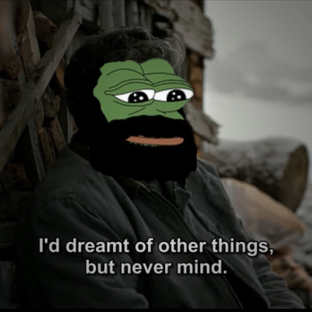

آیا مایل هستید که تهیتی را بشناسید؟

جای خالی را پر کنید
تاریخ ... است و آینده ...
صورت ابتدایی تهیتی را به خاطر دارید؟
کدام گزینه کلمه تهیتی را توصیف میکند:
بیشترین میتینگها در کدام بود؟
چه چیزی فرهنگ خرابات را شکل داد؟
عنصر اصلی خرابات متاخر چه بود؟
کدام عامل پایان خرابات را رقم زد؟